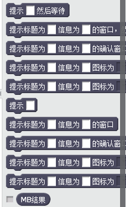

本节，我们将学会如何使用Codeic创建一个提示窗口。
提示窗口可以给用户提示一些内容，有时还会附带确定和取消按钮，比如关闭某个软件，可能会提示你是否要关闭；进行了错误的操作，还会提示出错。这些都靠提示窗口来实现。
有了Codeic，我们就可以在Scratch上实现提示窗口这个功能。如做个小游戏，游戏胜利后可以弹出胜利的提示窗口，失败亦如此。
要让Scratch可以实现这个功能，需要Codeic的帮助。首先要在电脑上安装好Codeic，Codeic在Codeic官网中可以直接下载。安装后运行它，Codeic就会在后台运行了。
Codeic可以实现很多功能，调用很多接口。提示窗口功能是Codeic调用Util扩展组件中的MB子工具集实现的，也就是提示窗口功能在Util扩展组件中，Codeic通过调用Util来调用提示窗口相关的接口。
这时，我们就需要在Scratch中导入符合提示窗口接口调用规范的扩展文件了，扩展文件是以json为后缀的文件，这些扩展文件都可以在Codeic官网上下载。用户也可以自己配置自己的扩展文件，只要符合Codeic官网的扩展文档里的规范即可。自行配置扩展文件的好处是可以根据使用的功能配置相应的接口，而不必把Codeic所有支持的接口都导入进Scratch中，这样在Scratch实际编程中会显得混乱。但自行配置扩展文件需要注意的是，不要将两个侦听端口一样的扩展文件同时导入到Scratch中，这会使得Scratch与Codeic交互中Codeic向Scratch反馈信息时受阻！
然而，我们现在直接使用官网提供的Codeic的扩展文件，里面包含了Codeic大部分的扩展接口。如果不懂自行配置扩展文件的话，可以直接使用它。
打开Scratch，在顶部菜单栏的文件选项上按住键盘上的Shift按键+鼠标左键，便可以在底部发现"Import experimental HTTP extension"选项，点击它，会弹出一个选择窗口，在系统中找到Codeic.json文件或自行配置的扩展文件并点击确定。

这时，在Scratch的更多模块里，便出现Codeic扩展

提示窗口功能所用到的接口如上图所示。
这时候，你就可以用鼠标拖拽要用到的代码块愉快地玩耍了。但在此之前，你除了从代码块字面上理解代码块的功能外，可能还需要了解其他内容。
可能你导入扩展文件后会惊讶，为啥一个小小的提示窗口窜出了这么多代码块。我们现在就来讲解它。
在Scratch中，代码块分两种，一种是非等待型，另一种是等待型。执行到非等待型的代码块就继续往下执行，而不会等待相应的功能的实现，等待型则是会等待直到相应功能反馈信息才继续执行下面的代码块。如“在...之前一直等待”就是等待型代码块，直到有反馈信息后，这里是布尔类型，才继续执行下面的代码块；“移动...步”就是非等待型代码块，执行到这里就不做停留继续执行下一代码块。
在提示窗口功能中，后面有等待字样的就是等待型代码块，没有就是非等待型代码块。
提示窗口还有一种确认窗口，也就是提示框会有确定和取消两个按钮，这时用户按不同按钮的反馈信息就会反馈到“MB结果”中，如果点了确定，则MB结果值为1，否则为0。
你可能会觉得代码块的描述文字不好，也可以自行配置扩展文件，更改这些描述文字，比如“MB结果”可以在扩展文件中直接更改为“结果”，只要在交互传参及反馈信息时符合规范即可。